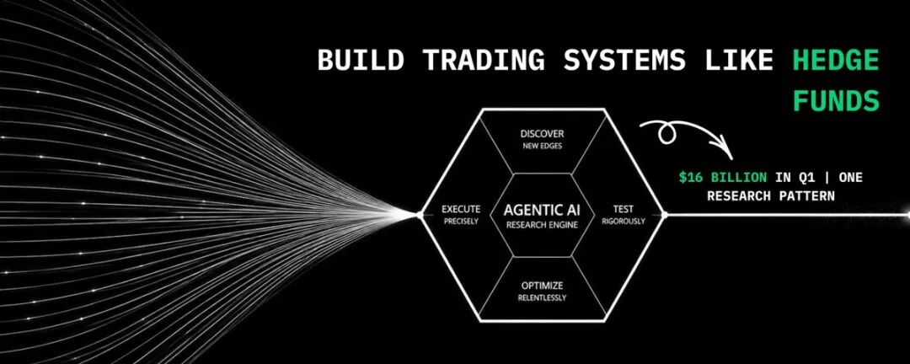
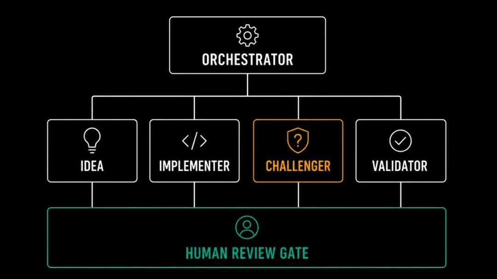
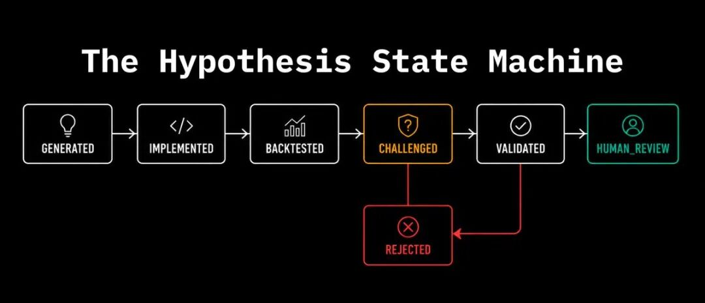
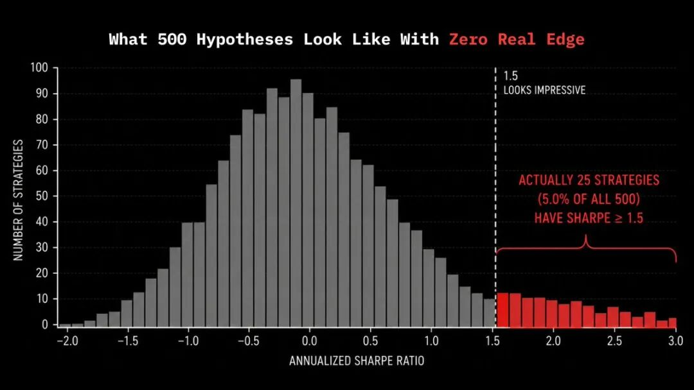

作者：Ruuj (@RuujSs)
原文链接：https://x.com/RuujSs/status/2071983051526250641
导读
这篇文章最值得读的地方，在于它把“AI 做交易”从空泛讨论拉回到机构真实在搭建什么系统。作者点名 Man Group、Bridgewater、Jane Street、Two Sigma，拆开讲它们各自押注的方向、实际解决的问题，以及背后一整套研究流水线如何落地。
更有价值的一点，是文章把问题定义得很清楚：顶级量化团队眼前的压力，首先是研究吞吐量。市场、新数据、论文、资产关系都在高速变化，人类研究员每个月能严谨验证的假设数量却很有限。Agentic AI 进入这一领域，首先扩张的是假设生成和预筛选能力。
如果你关心如何把 Agent 真正接进研究和生产环境，这篇文章还有两个很强的部分。一个是完整架构：编排器、专职 Agent、人类审查关口。另一个是统计纪律与生产监控：多重检验校正、walk-forward validation、实时信号健康检查。这些内容决定了一套系统能否长期运行。
量化基金如何用 Agentic AI 构建交易系统（完整路线图）
Man Group、Bridgewater、Jane Street、Two Sigma。下面会准确拆开他们究竟搭了什么、如何运作，以及这对今天构建系统化策略的人意味着什么。关于交易中 AI 的多数报道，很少正面回答这个问题。

Man Group、Bridgewater、Jane Street、Two Sigma。下面会准确拆开他们究竟搭了什么、如何运作，以及这对今天构建系统化策略的人意味着什么。
关于交易中 AI 的多数报道，很少正面回答一个问题。
问题里当然包含 AI 能否交易。每个人对此都有自己的看法。真正更值得追问的是：顶级系统化基金到底在搭什么，它实际解决的是什么难题，新闻标题之下的底层架构又长什么样？
这些答案其实已经存在，而且有文档、有公开线索。下面我把自己掌握到的内容完整讲给你。
我是 Ruuj，一名后端开发者、研究者，目前也在做量化系统。
下面进入正文。
Man Group 旗下量化部门 Man Numeric 已部署一套 Agentic AI 系统，它能够自主生成、编写代码并回测交易策略，这也是全球最大上市对冲基金之一首次在机构级规模上采用 Agentic AI。AlphaGPT 已经产出了数十个投资信号，其中若干已经通过审批进入实盘交易。Bridgewater 的 AIA Labs 在 2024 年 7 月推出了一只 20 亿美元的 AI 驱动宏观基金，该基金在 2025 年取得了 11.9% 的回报；其多层护栏机制将错误率从 8% 降到了 1.6%。Jane Street 仅在 2026 年第一季度就创造了 161 亿美元的交易收入，并承诺投入 60 亿美元建设 AI 基础设施。Two Sigma 的资深工程师则将 AI 描述为量化研究和投资运作方式的“操作系统”，并提到他们使用生成式 AI 已超过五年。
这些都已经走进生产环境。背后跑的是真金白银。更值得关注的，始终是数字背后的架构思路。
读完本文，你会清楚理解以下几个问题：在系统化交易里，Agentic AI 究竟意味着什么，它和普通 AI 工具有何差异；它真正解决的是什么问题，为什么研究吞吐量才是第一洞见；所有严肃实现方案都会使用哪些完整架构层；信号发现 loop 是如何运作的，其中有哪些细微但决定成败的设计点；大规模场景下，哪些统计纪律能把真实信号与噪声分开；以及生产环境监控层到底应该长什么样。
第一章：他们究竟在解决什么问题
在进入架构之前，有一个想法你必须先建立起来。因为大多数关于交易 AI 的解释，往往从解决方案开讲，问题本身常常留在阴影里。
系统化交易公司的研究流水线有一个根本约束：单位时间内能被严肃测试的假设数量，受限于研究员人数。
一支很强的量化团队，可能每个月也只能严谨地开发并验证 5 到 10 个新交易信号。这里面包括想法生成、实现、回测、统计验证，以及经济逻辑一致性检查。一个月，也就这么多。
Man Group 的看法很直接：这项技术正在帮助量化投资应对一个越来越突出的挑战。可用数据和潜在市场关系的数量已经超过了人类研究带宽。早期测试表明，这套系统能够识别研究员容易忽略的连接，并产出更丰富的一组想法。
市场每秒钟都在产生新数据。
每周都有新论文出现。
宏观条件变化时，资产之间会冒出新的关系。
已有因子会随着资金拥挤而失去锋芒。
可测试的假设空间扩张得太快，任何人类团队都追不上它的增长速度。
这才是真正的问题。问题在于吞吐量。有价值、值得认真评估的假设数量，远远高于任何人类团队真正能完成评估的数量。
放到投资场景里，AI 更接近一个小型组织，它通过多角色协作推进研究，单个回答问题的模型只是其中一个组件。交易想法的形成会被拆成多个角色：一个 Agent 负责搜索，一个负责解释信息，一个负责质疑推理，最后还有一个负责签字放行。这样的结构最终会表现得很像一家真实公司，也像一组相互配合的团队。
Agentic AI 解决的正是这个具体问题。它的目标是让研究员把精力放在更高价值的环节，同时扩大漏斗上游，生成并预筛选远多于人工可处理数量的假设。这样，真正送到研究员手里的内容，已经提前经历过一轮自动化质疑流程。
这个重新定义，会改变你对整套系统该如何构建的理解。
第二章：架构层，所有严肃实现都会采用的三层结构
Agentic AI 领域已经经历过一次属于自己的“微服务革命”。领先实现方案采用的是用编排方式组织起来的一组专职 Agent，单个大模型只承担局部能力。每个 Agent 只处理一个独立阶段，每个 Agent 的职责都狭窄而清晰。职责越收敛，单个 Agent 越可靠，因为你可以分别对它们做测试、评估和改进。

在系统化交易里，所有有文档可查的实现方案都遵循同一种三层结构。
第一层：编排器（Orchestrator）
编排器负责管理整体研究流水线。
它不生成假设。
它不写代码。
它也不评估结果。
它的职责是协调下层那些专职 Agent，在它们之间传递上下文，跟踪哪些假设已经被测试，以及当下游任何一个步骤产出异常结果时，决定下一步怎么办。
在生产系统中，这通常通过状态机（state machine）实现。每个状态代表某个假设当前处于流水线的哪个位置：已生成、已实现、已回测、已被质疑、已验证，或者等待人工审阅。编排器维护这些状态，把工作路由给对应专职角色，并负责阶段之间的状态迁移。
状态机设计让整套系统具备可审计性。每个决策点、每次状态变化、每个拒绝动作，都会带着原因被记录下来。只要一条流水线同时跑着几百个假设，出现意外输出就会成为日常情况。此时你必须能精确知道：问题发生在哪一层，原因是什么。
第二层：专职 Agent
真正干活的是四类专职角色。
每个角色只负责一个窄而明确的职责范围。正因为范围收敛，单个 Agent 才具备可测、可评、可改进的特征。
你可以把它想象成一个数字化三人研究团队外加一名专门“唱反调”的审查者。
“想法生成器”负责头脑风暴式地产生投资概念。
“实现者”把研究想法翻译成可执行代码。
“评估者”依据和人工研究完全一样的严苛标准，判断这项研究是否成立。
第四个角色，也就是多数公开描述里经常缺席的那个角色，是“挑战者（Challenger）”。它是一个独立 Agent，唯一职责就是以对抗姿态去寻找一个假设为何不值得信任。这个 Agent 会接收假设说明、实现代码和回测结果，然后产出结构化批评。它给出的挑战评分会决定这个信号能否进入人工审查。凡是连自动化对抗审查都扛不住的信号，都不该继续占用研究员时间。
第三层：人工审查关口
AlphaGPT 会先提出信号、写代码、跑回测，然后成果才会进入人工视野。之后，它们才会进入 Man Numeric 现有的标准研究流程和投资委员会流程。开发者会逐行检查代码后再考虑落地。每一个想法都必须由明确假设驱动，并具备清晰的经济逻辑。看到结果之后再去翻转信号方向，这种做法对人类和 AI 都不允许。
这道关口会长期存在。
它也不会随着技术成熟而消失。
它是任何负责任的 Agentic 研究流水线里的结构性组成部分。
系统的任务，是把送到这道关口前的内容在质量和数量上同时大幅提升。而关口最终做决定的人，始终是人类。
第三章：信号发现 loop，每个阶段究竟如何运作
信号发现 loop 是整篇文章里工程含量最高的部分。每个阶段都有一组说起来简单、真正做对却很难的设计要求。

想法阶段：什么样的假设生成才算合格
想法 Agent 最重要的属性，是具体性。
“一个主题”和“一个假设”之间，有一道非常清晰的分界线。
“做动量交易”只是一个主题。
“当 20 日收益率高于过去 60 日收益分布的 1.5 个标准差，同时已实现波动率低于过去 90 日中位数时做多”，这才是一个假设。
这个假设足够具体，因此可以被无歧义地实现；可以直接拿历史数据检验，无需额外解释；也具备可证伪性，你能够判断它究竟成立还是失效。
每一个想法都必须由假设驱动，而且要有清晰的经济逻辑。AI 需要明确写出它的假设，解释它为何说得通，并在整个过程中坚持这个假设。回测一旦开始，再去修改假设就会带来严重的数据挖掘风险。
想法 Agent 会从研究文档、学术论文、财报电话会纪要以及内部绩效报告中挖掘“种子”。它从这些材料里抽取投资主题，再把主题转写成可测试命题。
吞吐量优势是真实存在的。一个人类研究员也许每个月只能认真发展出 3 到 4 个假设。而想法 Agent 一周就能生成几十个。可它的产出质量，会直接受到两件事约束：它所采掘的信息源质量，以及输出格式对“具体性”的约束强度。
还有一条设计要求很重要：想法 Agent 还应该输出这个信号在什么条件下会失效。
它本身就是一个真正的过滤器。
一个完全说不出失效条件的假设，大概率只是对近期数据做了弯折拟合。
一个能说清失效条件的假设，则更可能拥有可持续的作用机制。
而这些失效条件本身，也会在信号上线后直接转化为监控指标。
实现阶段：lookahead 问题
实现 Agent 会把假设说明翻译成可执行代码。
在生产系统里，这意味着代码必须真正接进你的数据基础设施。你需要的是能直接跑在真实数据流水线上的生产代码。那种只在样例数据上运行的通用示例，只能当作草稿。
IMPLEMENTER_PROMPT = """
你是一名量化开发者，负责实现一个交易信号。
假设：{hypothesis}
请使用 pandas 和 numpy 编写这个信号的 Python 实现代码。
要求：
- 函数签名：compute_signal(prices: pd.DataFrame) -> pd.Series
- prices 包含以下列：open, high, low, close, volume，索引为 DatetimeIndex
- 返回值：1（做多）、-1（做空）、0（空仓）
- 禁止 lookahead：所有计算只能使用 t 时刻可获得的数据
- 禁止硬编码阈值：阈值应从滚动统计量中推导
- 对缺失数据先做 forward-fill，再删除剩余 NaN
只返回代码。不要解释。
"""
def implement_signal(hypothesis: dict) -> str:
response = client.messages.create(
model="claude-sonnet-4-6",
max_tokens=1000,
messages=[{
"role": "user",
"content": IMPLEMENTER_PROMPT.format(hypothesis=json.dumps(hypothesis, indent=2))
}]
)
text = response.content[0].text.strip()
text = text.replace("python", "").replace("", "").strip()
return text
“禁止 lookahead”不能只停留在 prompt 指令层。
在真正系统里，它会变成每一份实现代码都必须通过的结构化测试，然后回测才能启动。测试过程会重建每个历史时点上当时真实可获得的信息，并验证信号计算只使用了当时已经存在的数据。任何会触碰未来数据的实现，都会在回测开始之前直接被拒绝，而非事后补救。
挑战者阶段：最重要、却很少有人认真展开讲的一层
挑战者 Agent 的职责，就是挑战推理。
整套结构最终会表现得很像一家真正的机构：一个角色提出想法，一个角色负责反驳，第三个角色负责评估。所有 Agent 会同时对数百个想法跑这套 cycle。能够扛过对抗审查的，才会流向研究员。剩下的则会被丢弃。
挑战者让这条流水线保持智识上的完整性。
它的职责聚焦在提出反对论据。批准与验证由评估阶段承担。
它唯一要做的，就是替你找出“为什么这个结果不该被轻信”的最强论据。
CHALLENGER_PROMPT = """
你是一名严格的量化研究员。你的任务是找出这个信号
为何不应被轻信。请保持怀疑，并给出具体理由。
假设：{hypothesis}
实现代码：{code}
回测指标：{metrics}
请评估以下每一类风险：
1. Lookahead bias：数据是否在可用之前就被使用？
2. Survivorship bias：失败资产是否被排除在样本外？
3. Overfitting：逻辑是否针对历史数据做了特定调参？
4. Economic coherence：是否存在真实、可持续的作用机制？
5. Transaction cost realism：在现实交易成本下，绩效还能成立吗？
6. Regime dependency：它能跨越不同市场环境成立吗？
返回 JSON：
{{
"confidence_score": float (0-10, 10 = highly trustworthy),
"critical_concerns": list[str],
"recommendation": "APPROVE" | "REVIEW" | "REJECT",
"rejection_reason": str or null
}}
"""
def challenge_signal(hypothesis: dict, code: str,
metrics: dict) -> dict:
response = client.messages.create(
model="claude-sonnet-4-6",
max_tokens=1000,
messages=[{
"role": "user",
"content": CHALLENGER_PROMPT.format(
hypothesis=json.dumps(hypothesis, indent=2),
code=code,
metrics=json.dumps(metrics, indent=2)
)
}]
)
text = response.content[0].text.strip()
text = text.replace("json", "").replace("", "").strip()
return json.loads(text)
这里的输出是一个结构化评分加一条建议。
凡是扛不住这轮对抗审查的信号，都不该继续消耗研究员时间。
每个阶段会产出什么
想法阶段产出的是一份规格说明，也就是一个带有作用机制和失效条件的可测试命题。
实现阶段产出的是代码和回测结果。
挑战者阶段产出的是结构化批评以及置信分数。
只有通过挑战阶段的假设，才会进入统计验证层。
只有通过统计验证层的假设，才会进入人工投资委员会。
整条流水线，本身就是一套渐进式过滤器。每个阶段都在清除不同类型的噪声，为下一阶段减压。
第四章：统计验证层
如果你要运行一条 Agentic 研究流水线，最该吃透的部分就在这里。让这套系统具备价值的，正是它的规模；而让统计纪律变得一步都不能少的，也同样是它的规模。
当一个人类团队一个月只测试 5 个假设时，5% 显著性水平下得到的结果通常仍然具备意义。仅靠偶然性让这 5 个结果里出现任意一个假阳性的概率，大约是 23%。这个风险还在可控范围内。
可如果一条 Agentic 流水线一个月测试 500 个假设，同样的 5% 显著性阈值就会带来大约 25 个纯随机产生的假阳性。这样一来，看起来显著的结果里，会有相当一部分只是噪声。如果没有多重检验修正，流水线只会产出更多“看起来成立”的结果，却没有带来更多真实优势。
正确的框架包含三部分。
显著性检验
这项检验会把策略真实的 Sharpe ratio，拿去和一组“统计属性相似的随机策略”生成的 Sharpe ratio 分布进行比较。只有当某个策略的 Sharpe ratio 落在那个分布的前 5% 区间，它才会被视为真正显著。
这个分布的生成方式采用的是 block bootstrap，而非简单重采样。原因在于，block bootstrap 能保留金融收益序列中的自相关结构、波动率聚类以及 regime dependence，而简单重采样会把这些都破坏掉。
使用一个构造正确的零假设分布非常重要。因为天真的重采样方法，会系统性低估“在金融时间序列里偶然得到一个看上去很漂亮结果”的概率。

多重比较修正
当你同时测试大量假设时，显著性阈值必须随着测试次数一起调整。
Benjamini-Hochberg 程序控制的是 false discovery rate，也就是“所有被批准信号里，真实上只是噪声的比例”，而非单次检验的错误率。与 Bonferroni correction 相比，它没有那么保守，但仍然能对“流水线批准结果里大部分其实是假阳性”的局面提供有意义的保护。
def benjamini_hochberg_correction(p_values: list[float], fdr: float = 0.05) -> list[bool]:
n = len(p_values)
indexed = sorted(enumerate(p_values), key=lambda x: x[1])
max_rank = 0
for rank, (_, p_val) in enumerate(indexed, start=1):
if p_val dict:
if len(live_returns) 0 else 0.0
cum = (1 + live_returns).cumprod()
live_drawdown = float(((cum - cum.cummax()) / cum.cummax()).min())
daily_sr = live_sharpe / np.sqrt(252)
se_daily = np.sqrt((1 + 0.5 * daily_sr ** 2) / n)
se_annual = se_daily * np.sqrt(252)
sharpe_z = (live_sharpe - expected_sharpe) / se_annual if se_annual > 0 else 0.0
months_elapsed = max(n / 21, 1)
observed_trades = int(live_signal.diff().abs().sum() / 2)
trades_pm = observed_trades / months_elapsed
flags = []
if live_drawdown < max_drawdown_limit:
flags.append(f"回撤越界：{live_drawdown:.2%}")
if sharpe_z < -2.0:
flags.append(f"Sharpe 恶化：实时 {live_sharpe:.2f}，预期 {expected_sharpe:.2f}")
if trades_pm < 0.5 * expected_trades_pm:
flags.append(f"信号不活跃：{trades_pm:.1f} 笔/月，预期 {expected_trades_pm} 笔/月")
status = 'HUMAN_REVIEW' if flags else 'OPERATING'
return {
'status': status,
'live_sharpe': live_sharpe,
'live_drawdown': live_drawdown,
'sharpe_z_score': sharpe_z,
'trades_per_month': trades_pm,
'flags': flags
}
这也是所有可查机构级实现方案共享的原则。
Bridgewater 由人工专业团队负责风险管理和执行监督。
Man Group 的投资委员会会在多个阶段审查每一个信号。
Two Sigma 的研究员在整个过程中始终扮演监督者。
监控层同样也是 AI 失误时的一张安全网。它是那套基础设施的一部分，用来持续保留人类判断。而在人类判断这一点上，所有真正严肃对待这件事的系统，态度都高度一致。
总结
把所有公开可查的实现方案放在一起看，会得到一幅高度一致的图景。
到那时，95% 的对冲基金经理已经向员工开放了多种生成式 AI 工具。在那些管理规模达到数百亿、上千亿美元的机构里，AI 集成已经成为一项真正的经营决策，背后站着真实资本、真实人才和真实治理结构。
Man Group 现在每周测试的信号数量，已经超过其人类团队一年能完整评估的数量。Bridgewater 的 AI 基金做出了与人工投资经理组合低相关的回报。Jane Street 为了在竞争尺度上训练模型，承诺投入 60 亿美元建设算力基础设施。Two Sigma 则已经在自己的研究基础设施中运行生成式 AI 超过五年。
本文五章，拼起来就是这类系统的完整架构图景。
问题是研究吞吐量。
架构层是编排器、专职 Agent 和人工关口。
信号发现 loop 包括具体假设、禁止 lookahead、对抗式挑战。
统计验证层包括显著性检验、多重比较修正、walk-forward validation。
生产监控层包括信号健康、绩效健康、数据健康，以及人工升级机制。
这一切都属于面向真实构建者和研究者的教育内容。它聚焦方法论、系统设计与研究纪律，不提供金融建议，也不提供投资建议。
构建这套东西，并不要求你先拥有 1500 亿美元 AUM。
它要求的是后端系统思维、严格的统计纪律，以及维护人工关口的判断力。无论自动化能力提升到什么程度，这道关口都不该被绕开。
最后，留一个真正值得思考的问题。
Man Group、Bridgewater、Two Sigma 和 Jane Street，其实都在用同一种架构模式解决同一个吞吐量问题：专职 Agent、对抗式评估、人工关口。真正拉开差距的，是每一层输入内容的质量，以及它们评估输出结果时所执行的严谨程度。
如果今天让你从零开始搭建这条流水线中的一层，你会先从哪一层着手？它能直接移除你当前研究流程里的哪个具体瓶颈？
欢迎把答案写在评论区。
这里没有标准答案。
但不同答案，会暴露出非常多的信息。